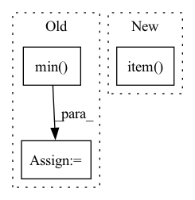

Pattern ID :10249
Before Change
if fixed_size is not None:
size = [fixed_size[1], fixed_size[0]]
else:
min_size = torch.min( im_shape) .to(dtype=torch.float32)
max_size = torch.max(im_shape).to(dtype=torch.float32)
scale = torch.min(self_min_size / min_size, self_max_size / max_size)
if torchvision._is_tracing():
scale_factor = _fake_cast_onnx(scale)After Change
if torchvision._is_tracing():
new_unpad = _tracing_item_onnx(ratio_h), _tracing_item_onnx(ratio_w)
else:
new_unpad = int(ratio_h.item() ), int(ratio_w.item())
image = F.interpolate(image[None], size=new_unpad, mode="bilinear", align_corners=False)[0]
In pattern: SUPERPATTERN
Frequency: 3
Non-data size: 3
Instances Fragment ID: 36117973
Project Name: zhiqwang/yolov5-rt-stack
Commit Name: cd1a6ec7cda09de0dc92962a37ecb4f723a8dfeb
Time: 2022-02-03
Author: 92794867+q3394101@users.noreply.github.com
File Name: yolort/models/transform.py
M Class Name: AnonimousClass
N Class Name: AnonimousClass
M Method Name: _resize_image_and_masks(3)
N Method Name: _resize_image_and_masks(5)
M Parent Class:
N Parent Class:
M File Name: yolort/models/transform.py
N File Name: yolort/models/transform.py
M Start Line: 257
M End Line: 286
N Start Line: 67
N End Line: 77
Before Change
accuracies = (predictions == true_labels).float().sum(dim=1)
accuracies_max = accuracies.max()
rel_threshold = X_valid[current_rel][accuracies_max == accuracies].min()
rel_thresholds[r.item()] = rel_threshold
predictions = X_valid[current_rel] >= rel_threshold
y_pred_valid[current_rel] = predictions.view(-1).long()After Change
thresholds[REL_KEY] = get_threshold(X_valid, y_valid)
for r in test_relations: // get predictions based on validation thresholds
key = r.item() if r.item() in thresholds else REL_KEY
threshold = thresholds[key]
current_rel = test_spo_all[:, 1] == r Fragment ID: 36117954
Project Name: tsafavi/codex
Commit Name: c95e36e54a106a4920017ba8aeb86d8841170921
Time: 2020-07-23
Author: tsafavi@umich.edu
File Name: scripts/tc.py
M Class Name: AnonimousClass
N Class Name: AnonimousClass
M Method Name: main(0)
N Method Name: main(0)
M Parent Class:
N Parent Class:
M File Name: scripts/tc.py
N File Name: scripts/tc.py
M Start Line: 170
M End Line: 232
N Start Line: 200
N End Line: 235
Before Change
else:
im_shape = torch.tensor(image.shape[-2:])
ratio = torch.min( new_shape[0] / im_shape[0], new_shape[1] / im_shape[1])
ratio_h = torch.round(im_shape[0] * ratio).to(dtype=torch.int32)
ratio_w = torch.round(im_shape[1] * ratio).to(dtype=torch.int32)
if torchvision._is_tracing():After Change
if torchvision._is_tracing():
scale_factor = _tracing_float_onnx(scale)
else:
scale_factor = scale.item()
recompute_scale_factor = True
image = F.interpolate(
image[None], Fragment ID: 36117967
Project Name: zhiqwang/yolov5-rt-stack
Commit Name: 1fea1a60c2517c2130d038af9d25a89f5a278873
Time: 2022-02-07
Author: zhiqwang@foxmail.com
File Name: yolort/models/transform.py
M Class Name: AnonimousClass
N Class Name: AnonimousClass
M Method Name: _resize_image_and_masks(4)
N Method Name: _resize_image_and_masks(3)
M Parent Class:
N Parent Class:
M File Name: yolort/models/transform.py
N File Name: yolort/models/transform.py
M Start Line: 59
M End Line: 75
N Start Line: 67
N End Line: 86